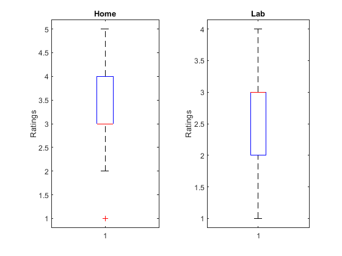
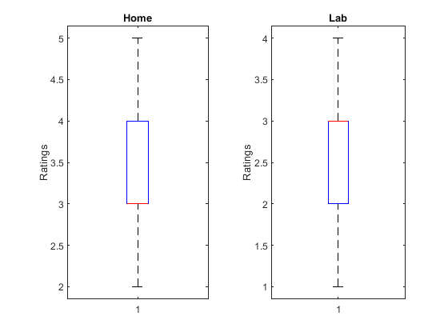
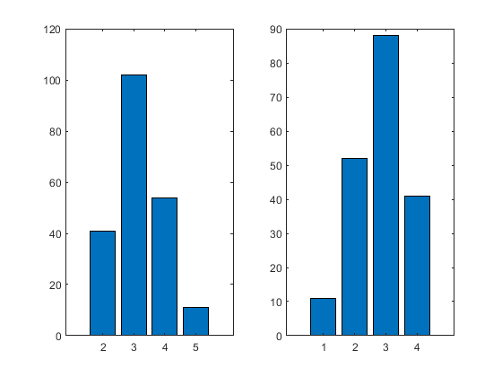
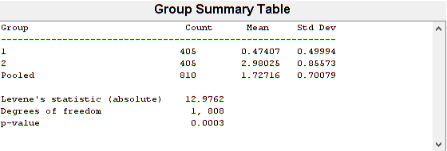
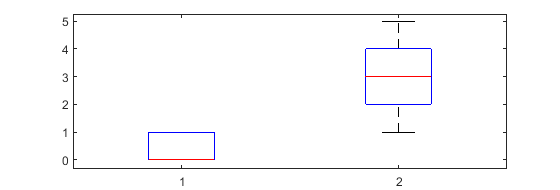
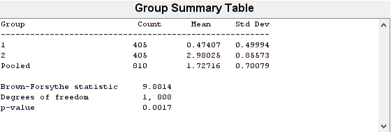

Contents
Read Data
Read in data sets and seperate them by ID into 2 groups
T = readtable("..\..\lab_crowd_speech_quality.xlsx");
t_home = T(T.Environment == 0,:).Quality;
t_lab = T(T.Environment == 1,:).Quality;
Choose Test
Now we have to decide which test we have to use. In the task it is written: "Does the independent variable [test environment: (Lab=ID=1) (home=ID=0)] have a significant influence on the dependent variable (speech quality
Based on the Decision Tree we should use an independent T-test because:
a) Input data is categorical (lab and home)
b) Input data is independent from each other (one is conducted in the lab and the other in the home enviroment and these are not related)
c) Two variables
=> Independent T-Test
In order to to conduct the test the following requirements needs to be met:
(1) dependent variable measured at intervall or ratio level (check, because the the dependent variable is the given rating which is an interval)
(2) No significant outliers (will be checked later)
(3) Two categorical, independent groups (check, see above)
(4) independence of observations (check, see above)
(5) Normally distributed dependent variables (will be checked later)
(6) homogeneity of variances (Levene’s test) (will be checked later)
Requirements: (2) No significant outliers
We will use the 25th and 75th percentiles to detect outliers.
subplot(1,2,1) boxplot(t_home); ylabel('Ratings') title('Home') subplot(1,2,2) boxplot(t_lab); ylabel('Ratings') title('Lab')
As can be seen, the home enviroment ratings need to be cleared from outliers.
[cleard_outliers_of_home, TF_home] = rmoutliers(t_home,'quartiles'); [m,n]= size(t_home); disp("original amount: " + m) [m,n]=size(cleard_outliers_of_home); disp("new amount: " + m) t_home = cleard_outliers_of_home;
original amount: 213 new amount: 208
5 outliers of the home enviroment are removed.
subplot(1,2,1) boxplot(t_home); ylabel('Ratings') title('Home') subplot(1,2,2) boxplot(t_lab); ylabel('Ratings') title('Lab')
Requirements: (5) Normally distributed dependent variables
Now we check, if the data is normally distributed. This can be done by the Kolmogorov-Smirnov or Shapiro-Wilk test.
%Kolmogorov-Smirnov %if 1 = no normal distribution, if 0 = normal distribution %significance < 0,05, significance >= 0,05: [h_ks,p_ks_value] = kstest(t_home); if(h_ks==1) fprintf("Home environment ratings are not normal distributed(Kolmogrov-Smirnov-Test) with significant level:%d\n", p_ks_value) else fprintf("Home environment ratings are normal distributed(Kolmogrov-Smirnov-Test) with significant level:%d\n",p_ks_value) end [h_ks,p_ks_value] = kstest(t_lab); if(h_ks==1) fprintf("Lab environment ratings are not normal distributed(Kolmogrov-Smirnov-Test) with significant level:%d\n", p_ks_value) else fprintf("Lab environment ratings are normal distributed(Kolmogrov-Smirnov-Test) with significant level:%d\n",p_ks_value) end %Shapiro-Wilk % performs the Shapiro-Wilk test to determine if the null hypothesis of composite % normality is a reasonable assumption of a given distribution. % The Shapiro-Wilk and Shapiro-Francia null hypothesis is: % "X is normal with unspecified mean and variance." % - pVAlueis the p-value, or the probability of observing the given % result by chance given that the null hypothesis is true % - H % H = 0 => Do not reject the null hypothesis at significance level ALPHA. % H = 1 => Reject the null hypothesis at significance level ALPHA. % if 1 = no normal distribution, if 0 = normal distribution % significance < 0,05, significance >= 0,05: [h_sw, p_sw_value, SWstatistic] = swtest(t_home, 0.05); if(h_sw==1) fprintf("Home environment ratings are not normal distributed(Shapiro-Wilk) with significant level: %d\n", p_sw_value) else fprintf("Home environment ratings are distributed(Shapiro-Wilk) with significant level:%d\n",p_sw_value) end [h_sw, p_sw_value, SWstatistic] = swtest(t_lab, 0.05); if(h_sw==1) fprintf("Lab environment ratings are not normal distributed(Shapiro-Wilk) with significant level: %d\n", p_sw_value) else fprintf("Lab environment ratings are distributed(Shapiro-Wilk) with significant level:%d\n",p_sw_value) end [bincounts_home,edges_home,bin_home] = histcounts(t_home); subplot(1,2,1) centers_home=round(edges_home((1:end-1))); bar(centers_home,bincounts_home); [bincounts_lab,edges_lab,bin_lab] = histcounts(t_lab); subplot(1,2,2) centers_lab=round(edges_lab((1:end-1))); bar(centers_lab,bincounts_lab);
Home environment ratings are not normal distributed(Kolmogrov-Smirnov-Test) with significant level:1.552091e-175 Lab environment ratings are not normal distributed(Kolmogrov-Smirnov-Test) with significant level:8.950334e-144 Home environment ratings are not normal distributed(Shapiro-Wilk) with significant level: 3.440581e-13 Lab environment ratings are not normal distributed(Shapiro-Wilk) with significant level: 2.771783e-12
Even if both test fail we can assume, based on the two plots, that the data is approximately normally distributed. Furthermore are no other t-Tests witout normally distribution feasible. the Kolmogorov-Smirnov or Shapiro-Wilk test.
Requirements: (6) Homogeneity of variances (Levene’s test)
Because we have changed the amount of ratings during the outlier removal we need to conduct the Levene's test and check the equality of the variances from both independent variables.
disp("For mean - Levene") p = vartestn(table2array(T),'TestType','LeveneAbsolute') disp("For median - Levene") p = vartestn(table2array(T),'TestType','BrownForsythe')
For mean - Levene
p =
3.3476e-04
For median - Levene
p =
0.0017
   Apparently the data shows a significant level of lower than 0.05 so therefore we should reject the null hypothesis which means that both data sets have similar variances. But to go further we assume it will be higher than 0.05
T-Test
Perform the T-Test First we assume same variances:
[h_t_test_1,p_t_test_1,ci,stats] = ttest2(t_home, t_lab); if(h_t_test_1==1) fprintf("The test rejects the null hypothesis an therefore shows, that the two data samples are not from populations with equal means with significant level: %d\n", p_t_test_1) else fprintf("The test accepts the null hypothesis an therefore shows, that the two data samples are from populations with equal means with significant level: %d\n", p_t_test_1) end
The test rejects the null hypothesis an therefore shows, that the two data samples are not from populations with equal means with significant level: 3.747314e-05
Now we assume they are unequal
[h_t_test_2,p_t_test_2,ci,stats] = ttest2(t_home, t_lab,'Vartype','unequal'); if(h_t_test_2==1) fprintf("The test rejects the null hypothesis an therefore shows, that the two data samples are not from populations with equal means with significant level: %d\n", p_t_test_2) else fprintf("The test accepts the null hypothesis an therefore shows, that the two data samples are from populations with equal means with significant level: %d\n", p_t_test_2) end
The test rejects the null hypothesis an therefore shows, that the two data samples are not from populations with equal means with significant level: 3.846255e-05
Effect size
Last we have to calculate the effect size with the Cohen's d formula (for paired and not paired t-Tests)
%https://de.mathworks.com/matlabcentral/fileexchange/62957-computecohen_d-x1-x2-varargin effect_size= computeCohen_d(t_home,t_lab, 'independent')
effect_size =
0.4173
This values means, that the difference between the home enviroment and the lab enviroment is 0.4 times the standard deviation.